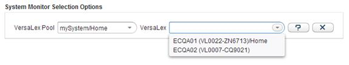
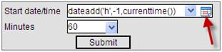
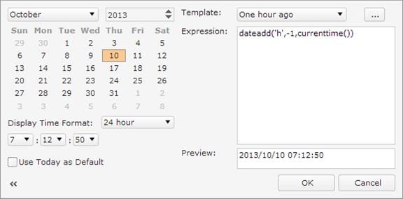

The Cleo System Monitor™ application is designed for a VersaLex system administrator. Cleo System Monitor allows a user, through a web interface, to view the status of the selected VersaLex system.
The following are the prerequisites for running the Cleo System Monitor on a specific VersaLex:
- The user group has been granted access.
- VersaLex must be running.
- System Monitor is licensed and enabled.
- The System Monitor embedded database must be up and running.
- The System Monitor embedded database must be accessible from the VersaLex application through which the user is connecting. This means the firewall must allow access to the embedded database port.
The user accesses the Cleo System Monitor application through a web browser. The default URL will be in the format:
http(s)://VesraLexComputerIP:http(s)Port/VLMonitor
Where VesraLexComputerIP is the address of the VersaLex (or VLProxy) system and http(s)Port is the HTTP(s) port the system is listening on for HTTP(s) traffic.
After logging in, the user selects a VersaLex Pool and a specific VersaLex to view.

The reports configured in VLNavigator for this user will be displayed.
The Cleo System Monitor™ software includes the following baseline dashboards:
- System Dashboard
- Action Dashboard
- Server Dashboard
- UI Dashboard
- Synchronization Dashboard
- VLProxy Dashboard
In addition to the baseline dashboards, Supplementary Dashboards might also be available.
The initial data for the dashboard is not displayed until that dashboard has been made
visible. Once the report has been made visible, it will automatically refresh
every 60 seconds. The dashboards can be refreshed on demand by clicking
Refresh
 on the
side bar
.
on the
side bar
.
Start date/time in History Sub-reports
Many of the items on the System Monitor dashboards link to history sub-reports. These history reports default to the last 1 hour of data. This is accomplished by using the formula:
dateadd(‘h’,-1,currenttime())
This formula subtracts 1 hour from the current time.
You can change this time by entering a date time in the format:
yyyy/MM/dd HH:mm:ss
where:
yyyy = 4-digit year
MM = 2 digit month (01-12)
dd = 2 digit day of the month (01-31)
HH = 2 digit hour of the day (00-23)
mm = 2 digit minute of the hour (00-59)
ss = 2 digit second of the minute (00-59)
An alternative is to use the calendar. This can be accessed by clicking on the calendar icon next to the field.

This will bring up the calendar control where you use one of the predefined templates by selecting from the Template dropdown or select the date and time from the left-hand side.
